A Deep Adversarial Framework for Visually Explainable Periocular Recognition
摘要
在生物识别领域，提供决策背后推理的能力一直是主要研究工作的核心。 解释不仅可以增加系统用户之间的信任，还可以增强系统的整体问责制和透明度。在这项工作中，我们描述了一个眼周识别框架，它不仅执行生物特征识别，而且提供支持决策的特征/区域的视觉表示。 我们的解决方案专门用于解释不匹配（“冒名顶替”）决策，我们的解决方案使用对抗性生成技术来合成大量“真实”图像对，从中检索与查询最相似的元素。 然后，假设查询/检索对之间的对齐，查询和检索元素的加权平均值之间的元素差异产生了查询对中区域的视觉解释，这些区域必须不同才能将其转换为 “真正”的一对。 我们的定量和定性实验验证了所提出的解决方案，产生了与最先进技术相似的识别率，但最重要的是，还为每个决策提供了视觉解释。
引言
这项工作描述了一个用于眼周生物识别的集成框架——除了执行识别任务——还提供了支持每一个决定的视觉解释。 考虑到生物特征识别的普遍性和可靠性[21]，我们在本文中的主要目标不是在错误率方面提出更好的识别框架，而是特别发散黑盒范式并遵循视觉上可解释的范式，如 如图 1 所示。
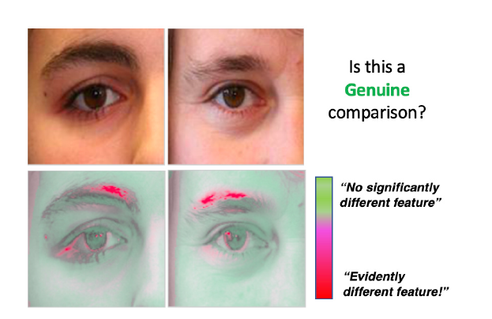
提出的视觉可解释框架的关键见解：给定一对图像，系统不仅报告二元决策（“真实”/“冒名顶替”类），而且突出显示每个样本中贡献最大的区域，以防万一 不匹配的决定。 在这个例子中，样本之间的虹膜和皮肤颜色相似，眉毛和睫毛的形状明显不同，左边的样本中还有一个皮肤斑点。 这些正是视觉解释中突出显示的区域。
通常，识别问题涉及一组独特且不可转移的特征，这些特征可以准确无误地识别主题。 生物特征，因为它们在该领域被指定，只要它们是通用的、可区分的、适应变化的并且易于收集，就可以用于这些目的[16]。 在证明符合这些要求后，生物特征可以分为两大类：
1. 特定对象自然拥有的生理特征（例如，虹膜、指纹和视网膜）
2. 行为生物识别技术，产生于主体与周围环境之间的相互作用（例如，步态和手写签名）
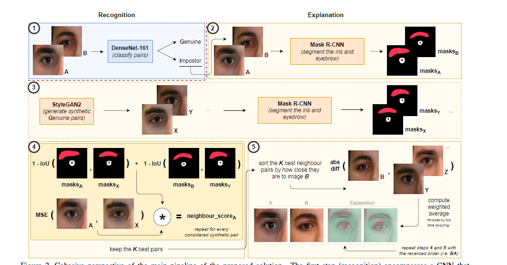
图 2. 建议解决方案的主管道的内聚透视图。 第一步（识别）包括区分“真正”和“冒名顶替”对的 CNN。 然后，根据“冒名顶替者”的决定，第二到第五步（解释）在一个大集合中找到 K 个“真正的”合成对，与查询对最相似。 假设查询和检索到的对之间对齐，查询和检索元素的加权平均值之间的元素差异提供了查询中区域/特征的视觉解释，这些区域/特征必须不同才能将查询转换为 一对“真正的”。
越来越多的人关注生物识别领域，眼周识别使用眼睛附近的信息进行识别，其中虹膜、巩膜、眉毛、眼睑和皮肤尤为突出。
关于可解释性的概念及其在识别问题中的应用，应该指出的是，深度学习解决方案依赖于模型复杂性和抽象能力才能变得真正准确。 尽管看似无害，但如果此类黑匣子在将未经授权的人员清除到合理区域上进行赌博，则可能会产生严重的负面结果。 因此，为决策提供人类可理解的解释尤为重要，这将增强整个系统的问责制和透明度，从而实现更广泛的应用（即取证）。 最近，欧盟通过 GDPR [3] 引入了“解释权”的概念。 尽管此类解释的定义和范围仍存在争议 [10]，但这些是朝着正式法规迈出的明确步伐，即关于可解释性概念的重要性
根据以上几点，本文描述了一个接收一对图像并返回双重输出的框架：1）二元匹配/不匹配决策，区分“真实”/“冒名顶替者”对； 2) 视觉解释，突出显示支持特定决策的输入数据的特征/区域。 这被认为是我们工作的主要贡献，从这个意义上说 - 据我们所知 - 它是第一个创建识别系统某些决定背后原因的准确和可解释的表示。其他贡献包括使用生成对抗网络 (GAN) 来合成视觉上令人愉悦的图像对，这些图像对忠实地类似于“真实”对的分布，这增加了学习集的多样性和灵活性，并且可以被视为一种替代形式 数据增强。
图 2 提供了执行识别任务的框架的连贯概述并提供了相应的解释：1) 首先，训练 CNN（具有众所周知的架构）以区分匹配/不匹配决策。 如果该对被认为属于“冒名顶替者”分布，我们会在大量合成数据中找到最相似的“真正”对。 这里的见解是，即使查询对在导致“冒名顶替”决策的元素之间存在显着差异，最接近的合成对很可能不会（因为它们来自“真实”分布）。 然后，假设最可能的合成对和查询充分对齐，获得它们之间的像素加权差异将提高视觉差异。
本文的其余部分组织如下：第 2 节总结了眼周识别和机器学习可解释性领域最相关的研究。第 3 节描述了我们的方法，第 4 节分析了获得的结果。 第 5 节总结了本文，同时还提供了一些最后的评论。
相关工作
眼周识别
眼周识别问题的开创性突破可以追溯到一组称为特征描述符的方法。 HoG、LBP 和 SIFT 等方法能够分别依靠边缘、纹理和关键点来生成简化的数据表示。 在[17]中，融合了每个特征描述符的结果，以忠实地区分“真正的”/“冒名顶替者”对。这项工作作为后续基于融合的方法的基础，如 [14] 中所述。 在 [6] 中，受限玻尔兹曼机用于学习输入数据的概率分布，并通过度量学习和 SVM 进一步区分。
随着深度学习解决方案的有效应用，研究人员转向流行的架构（特别是卷积神经网络），以追求不断提高的识别精度。 因此，在 [23] 中，主要概念涉及使用多个专门用于对特定类型的语义信息（例如性别或年龄）进行分类的 CNN。 然后，分数融合过程产生最终响应。 在 [15] 中，作者强制 CNN 忽略眼部区域（因为它可能包含镜面反射）并依赖于眼睛的周围区域（眉毛、眼睑和皮肤）。 [18] 创建了虹膜和眼周区域的独立表示，这些表示提供分类模块，其分数最终融合以做出决定。 使用多浏览机制，其中部分中间组件被配置为包含对最重要的语义区域（即眉毛和眼睛）的强调，赵和库马尔 [24] 开发了一个特别关注这些区域的识别模型，使 深度卷积神经网络 (CNN) 来学习额外的判别特征，从而提高整个模型的识别能力。 最近，[19] 试图通过学习响应一系列首选空间位置的特征特定过滤器来弥合生物识别和可解释性之间的差距。[5] 提出了一种综合解决方案，它利用零件的发现作为一种注意力形式。
机器学习的可解释性
在文献中，现有的可解释技术通常在深度、范围和模型适用性方面进行划分 [8]、[11]。 深度与我们解释给定模型的长度有关，即该技术是限制模型的复杂性以使其更加透明（内在可解释性），还是允许复杂性并专注于仅解释系统输出（事后可解释性）。范围表示技术拥有的范围，即它是否解释了单个预测（局部）或模型的整个行为（全局）。 最后，适用性根据它们的模型亲和力来划分技术，即它们是否仅与特定的模型系列（特定于模型）或任何类型的模型（模型不可知）兼容。最常引用的技术包括 LIME [20] 和 Shapley 码 (SHAP) [9]。 前者使用替代线性模型，在扰动数据（例如相邻像素的禁用集群）上进行训练，以局部近似复杂黑盒模型的行为。 后者使用博弈论和 Shapley 值，这些值根据特征对给定预测的重要性分配给特征。 此外，显着性图 [22] 使用高度复杂的函数（本质上是 CNN）对给定输入图像的导数，以确定哪些像素需要更改最少，同时也最多更改输出类别。 最后，出于可视化目的，因此，在本工作范围之外，PDP [4] 和 ALE [1] 技术能够生成将自变量与目标变量相关联的图，利用边际和条件分布的概念， 分别。
提出的算法
学习阶段
所提出方法的主要组成部分包括三个众所周知的模型：DenseNet-161、Mask R-CNN 和 StyleGAN2。 第一个 (DenseNet-161) 经过训练以解决身份验证问题，而分割模型 (Mask R-CNN) 经过微调以生成高质量的虹膜和眉毛面具。 最后，GAN 模型 (StyleGAN2) 学习如何创建合成数据，这些数据虽然与训练集中的分布非常相似，但其多样性足以逼近看不见的对象。 此外，还安装了第四个辅助模型 (ResNet-18) 以区分面部左侧和右侧的图像。 尽管单独训练，但所有模型都从相同的训练分组中学习，其中不包括一组为性能评估目的而保留的不相交 ID。
关于验证任务中使用的模型（DenseNet-161），应该说它比赵和库马尔 [23] 在他们的解决方案中使用的网络具有更多的参数。 这可能是因为我们的模型相对于基线（第 4.3 节）的识别性能略好，但也以分类的计算成本比基线高得多为代价，这在某些情况下可能是不切实际的
推理阶段
训练完成后，我们的方法在概念上分为五个主要步骤，如图 2 所示。首先，DenseNet-161 模型用于验证声称的身份：在接收到一对图像后，模型区分“真实”/ “冒名顶替者”对。 如果这对被认为是“冒名顶替者”，剩下的步骤会对该决定创建一个视觉上可解释的解释。
第二步采用查询对，并使用 Mask R-CNN 分割虹膜和眉毛区域。 接下来，第三步使用 StyleGAN2 生成器创建一个大型合成集，专门由“真实”对组成（即两幅图像属于同一个人）。 对于这些合成对中的每一个，ResNet-18 模型确定其侧面配置（即图像是关于脸部的左侧还是右侧），并且像以前一样，由分割模型获得掩码。
在获得合成数据及其对应的掩码后，根据虹膜中心的坐标对合成数据集进行索引，这将使检索步骤中的搜索速度更快。 为此，聚类算法 K-Means 在虹膜分割掩码的子集上进行训练，以获得三个质心，一个用于每个主要的虹膜凝视系列（即左、中和右）。 这样，我们根据虹膜位置的组合（例如左-左、右-中心......）对可用对进行索引。 通过这样做，在搜索时，我们可以只依赖与测试对共享相同组合的合成对，从而节省时间和无用的计算。
在确定合成数据集的与虹膜位置约束非常接近的一部分后，进一步使用分割掩码来确定哪些合成对具有与查询近似重叠的虹膜和眉毛。 这是获得视觉上令人愉悦的解释的重要要求，因为像素差异对相位差异（即组件未对齐）极为敏感。 因此，我们使用以下方法获得每个合成邻居和查询之间的相似性分数 sX：
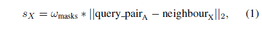
是 ||.||2 ℓ − 2 范数和 ω。 考虑组件未对齐的权重。 通过这种方式，我们获得了每个合成邻居与查询对的第一幅图像之间的加权距离。 考虑到 1 − IoU(., .)，即合成/查询分割掩码的并集交集的补充，ωmasks 值有助于具有良好对齐的对。 在实践中，我们在（大）数千个合成对中进行搜索，就第一张图像而言，最接近查询对。 因此，鉴于查询对的第二张图像来自不同的主题，它很可能具有与合成邻居不同的特征，这正是构成最终解释的那种不同之处。
这样，K 个最近的邻居根据它们到图像 B 的元素距离排序，使用（2）。 最后，为了产生最终解释，使用 K 个最佳邻居来获得与查询对图像 B 的像素级差异。实际上，从总距离总和中减去邻居距离，创建反向距离。 这确保了最近的合成邻居对最终结果的贡献比距离更大的那些更重要。
实现细节
DenseNet-161 模型以 0.0002 的学习率和 64 个图像对的批量大小训练了 15 个时期。Adam 算法用于权重优化过程（具有默认的 β1 和 β2 值）。 使用类似的训练设置来训练 ResNet-18 模型，尽管训练次数较少（即 5）。 对于 Mask R-CNN 的训练过程，我们保留其默认值，使用 0.001 的学习率、1 的批量大小和 30 个训练周期（在这种情况下，从 COCO 预训练权重进行微调）。 关于 StyleGAN2 架构，使用的训练步骤包括总共 80.000 次迭代和 8 的批量大小。 收敛后，生成器能够合成逼真的图像，例如构成人工数据集的大约 400.000 对。 最后，对于决定应该保留多少合成对的数字 K，我们使用了默认值 15。
实验和讨论
数据集和工作环境
如上所述，所提出的框架由两个模块组成：1）一个用于识别； 和 2) 另一个用于解释目的。 对于前者，所选择的 CNN 仅在 UBIPr 数据集 [13] 上进行训练，该数据集提供了身份验证问题中使用的 ID 注释。 关于解释步骤，主要依靠UBIPr和FFHQ的结合[7]。 尽管不能直接适用于这项工作的背景（即 它包含全脸图像，因此需要额外的步骤来提取眼周区域），FFHQ 数据集包含大量的眼周属性，其中一些在 UBIPr 数据集中较少。 在实践中，FFHQ 样本的一小部分但经过精心策划用于创建数据超集。 不管它们的来源如何，所有图像都被调整为一个共同的形状，这取决于任务（即 Mask R-CNN 为 512x512x3，StyleGAN2 为 256x256x3，CNN 为 128x128x3）。
由于在生物特征识别环境中很常见，因此定义适当的工作模式和世界设置很重要，系统是为此而构建的。 关于工作模式，我们的模型以验证模式（也称为一对一）运行，其中系统验证声称的身份 [16]。 至于世界设置，我们假设一个开放世界设置，这意味着在推理步骤中可以忠实地处理看不见的主题。
可解释性评估
我们的可解释性链以 DenseNet-121 模型训练开始，以执行验证任务。该模型可以进一步与 LIME、SHAP 或 Saliency Maps 配对以创建全面的比较方案，我们在其中添加了 [5] 中描述的方法。图 4 提供了从 GAN 模型生成的合成“真实”图像对的几个示例。 除了它们明显的视觉真实感之外，重要的是该集合包含具有最可能已知的眼周区域数据协变量的样本：不同的凝视、睁大/闭眼、不同的姿势、部分遮挡，甚至不同的面部表情。 未能结合这种多样性将决定查询的壁橱合成对仍然与它有很大不同，并且获得的视觉表示将具有较差的真实性。
图 3 显示了可视化解释系统的预期结果。 在实践中，LIME 试图保留最重要的超像素，SHAP 以红色调突出其认为重要的那些，而显着图则产生灰度解释。 至于 Huang 和 Li 的方法，它生成了一个热图，其中红色调提升了重要区域。关注所有方法之间的常见对，左侧样本在眉毛厚度和明显皮肤斑点的存在/不存在方面存在本质上的不同。至于右边，最明显的差异与眉毛区域有关。 总体而言，与其余四个解决方案相比，我们的结果信息量最大。虽然 LIME 和 SHAP 做得不错，但 Saliency Maps 提供了一个模糊的解释。 是 Huang 和 Li 的方法更接近我们的视觉吸引力水平，通过在左侧一对中清楚地突出部分眉毛和对象 A 的一部分皮肤斑点。 此外，当给出正确的样本时，它会生成一个包含对象 B 眉毛的纯红色区域。 然而，经过仔细检查，我们的结果显示出更吸引人的视觉线索：在左侧样本中，A 的皮肤斑点和睫毛顶部有明显的红色调，以及在右侧样本中重复眉毛差异，双眉具有高光，而不是 只有一个。 至于剩下的样本，第三个（就在第一个之下）通过突出显示两个皮肤区域的整体来清楚地解释，这在图像 A 和 B 之间明显不同。 最后，在第四对中还显示了眼睑的不同 ，通过对对象 B 图像上的眼周成分进行着色，并且在第五个示例中，对象 B 的眉毛和虹膜准确地显示为红色。 当客观地衡量所提出的方法提供的解释与基线（LIME、SHAP、Huang and Li (HL) 和显着性图 (SM)）之间的差异时，我们使用了一组 10 个异构测试查询并测量了像素级 每种技术返回的解释系数，它们对应于每种方法对特定图像位置给出的重要性（权重）以进行决策。 接下来，考虑到两种方法的响应之间的任何有意义的相关性都必须是线性的，我们测量了成对技术之间的 Pearson 线性相关性：
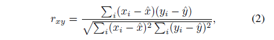
其中 xi/yi 表示每种技术提供的第 i 个分数和 ˆ。 符号表示平均值。 这样 rxy 测量 x 和 y 技术提供的解释之间的相似性：接近 0 的值将对应于更独立的解释，而接近 1 的值将暗示此类解释之间的语义相似性。
结果显示在图 5 所示的混淆矩阵中，其中主对角线提供了每种技术生成的分数的分布，其余单元格提供了技术对之间的散点图，顶部给出了皮尔逊相关值 rxy 每个单元格的左角（“SM”代表显着图，“HL”代表 Huang 和 Li 解决方案））。 所有这些技术都会报告一个本地数值，该数值对应于每个区域在最终决策中的作用/重要性。 LIME 是个例外，其中像素被二进制区分为“可见”/“被遮挡”。 在这种情况下，我们认为“可见”将等于 1，而“被遮挡”将等于 0。总的来说，我们观察到这些技术为最终决策中每个像素的重要性提供了相对独立的响应。 有趣的是，在某些情况下，两种方法（例如，HL 和 LIME 或 SM 和 LIME）之间甚至存在负相关值。 还有其他成对的解决方案在它们的响应之间实现了几乎完全独立（Shapley/Ours 方法），这表明用于定义解释区域/特征的策略完全不同。 仍然考虑我们的方法，与其余方法相比，其相关性水平保持相对较低，与 Huang 和 Li（最相关）的方法相关的值为 0.24，显着图的值为 0.1。 尽管如此，我们得出的结论是，所提出的解决方案正在提取人眼附近的语义信息（例如，特征和区域），这与任何其余方法强调的信息类型明显不同，这支持了解决方案的实用性 在本文中描述。
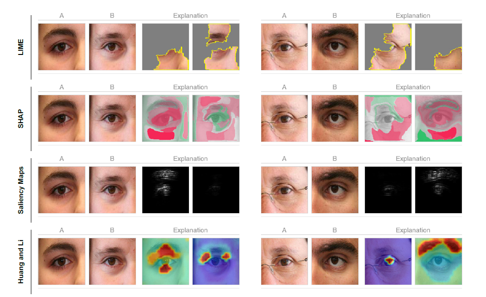 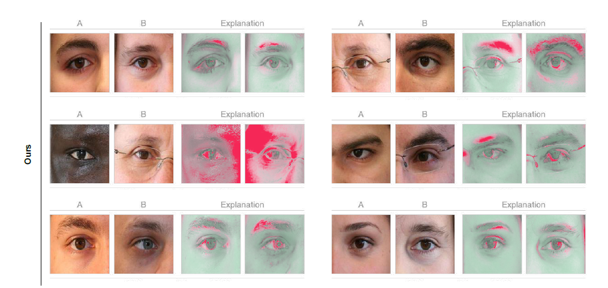
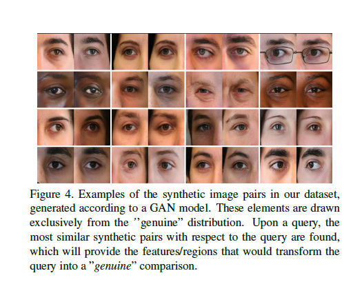
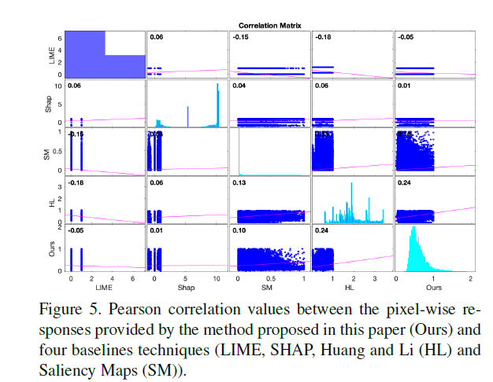
识别和准确性评估
首先，请注意，就识别率而言，我们的目标不是提供比最先进的识别框架更好的识别框架。 尽管如此，我们在本节中的主要目的是了解所提出的识别/解释网络是否能够在最先进的实现方面实现有竞争力的识别性能。
我们将所提出的方法的识别效果与众所周知的眼周识别模型进行比较（由于赵和库马尔 [23]，被认为代表了最先进的技术）。 使用 UBIRIs.v2 集 [12] 和 [23] 中描述的学习/评估协议，我们获得了表 1 中总结的结果。此外，我们提供了所提出策略的 ROC 值，可以与类似的 ROC 合理结合 图由 [24] 中基线的原始作者提供。
通过对 UBIRIS.v2 中 90% 的可用数据进行采样，并将结果样本划分为两个不相交的集合：80% 用于训练，其余 20% 用于测试，使用了一种类似引导的策略。 模型在每个样本中单独训练，并在相应的测试集中评估性能，从中获得 EER 和 AUC 分数。 此过程重复 10 次，以感知两个指标的平均值 ± 标准偏差值。 总的来说，结果是令人满意的，特别是考虑到 - 由于我们的模块化设计 - 所提出的框架的识别模块可以很容易地被任何其他模块替换，同时保持其可解释性能力。
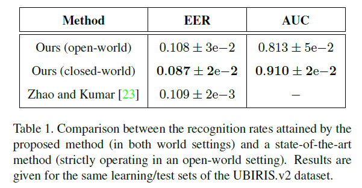
出于参考目的，图 6 提供了我们解决方案的接收器操作特性 (ROC) 曲线。 当与作者在同一组 [23] 中报告的相应结果进行比较时，可以得出两种方法之间的接近识别汇总性能（如表 1 所示）。 总的来说，我们在这个数据集中观察到这些技术之间的相似性能，支持我们的解决方案能够接近最先进的识别率的想法。
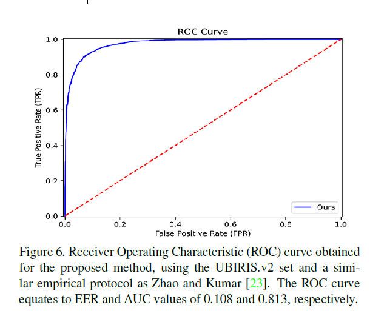
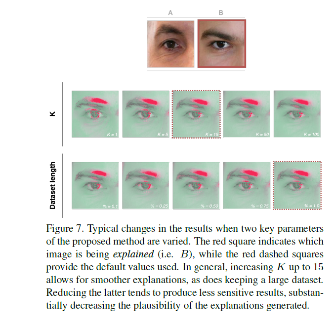
消融实验
对于我们的消融实验，我们确定了我们方法的两个超参数，它们可能在整个解决方案的最终有效性中发挥最重要的作用：1) 从每个查询的合成集中检索的邻居数量 (K)； 和 2) 合成集本身的长度。 本节讨论这些值的变化如何以不太理想的方式影响生成的解释的质量（如图 7 所示）。
邻居数
值 K 确定关于查询考虑多少合成对。 总的来说，我们观察到较小的值会导致更敏感和参差不齐的结果。 直到某个点（例如 15），增加 K 通常可以获得更平滑的解释，因为在对最近的邻居求平均时考虑了更多的样本。 然而，这种趋势开始返回增量改进（注意图 7，其中 K >= 50 逐渐停止在眼睑上呈现突出的色调）。
合成数据集的长度
这是我们解决方案中最敏感的参数。 考虑到找到与查询非常相似的“真正”对很重要，确保所有典型的眼周数据变化都在合成集中忠实地表示尤为敏感，确保检索到的元素（即最相似的）将 使其主要组件（虹膜、眉毛和眼睑）与查询本身对齐。 如果不满足这个条件，解释就会失去其生物学上的合理性和有效性。 图 7 说明了较小的合成集如何导致不太明显的解释，尤其是在眼睑和眉毛周围。
结论和进一步的工作
本文描述了一个基于众所周知的深度学习架构的集成框架，可以同时执行眼周识别，最重要的是，提供对支持每个不匹配决策的区域/特征的视觉解释，我们认为这是这种情况 最需要解释的地方。 根据 GAN 强大的生成能力，我们创建了一个非常大的遵循“真实分布”的合成对集。 在推理时，对于每个“冒名顶替者”比较，我们都能够感知最失败的区域和特征（即，那些与“真正”合成对的子集最明显不同的区域和特征）。 这能够产生令人愉快的解释，其中目标区域的每个组成部分以不同的颜色出现，具体取决于它如何影响最终决策。 重要的是，我们方法的模块化特性确保了眼周区域可以被其他生物特征（例如面部）替换，而不会影响解释。
作为未来的工作，我们正在开发一种策略，以提供对“真实”观察的直观解释，其中策略必须与本文中使用的“冒名顶替者”洞察力背后的想法大不相同。